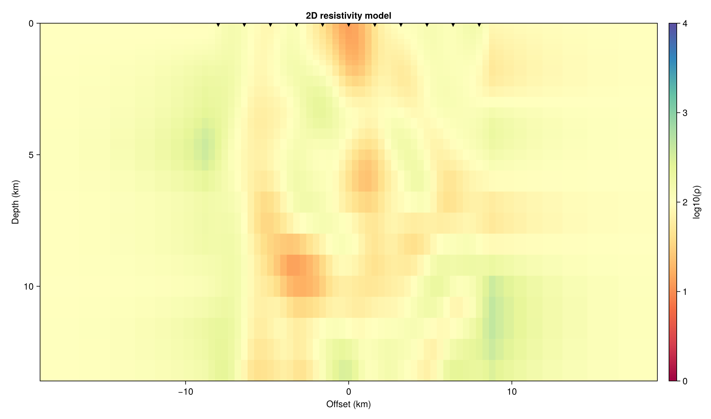
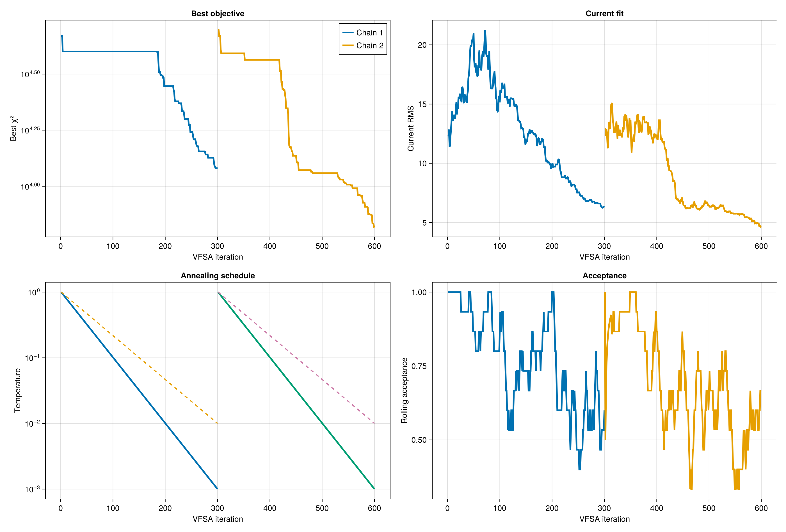
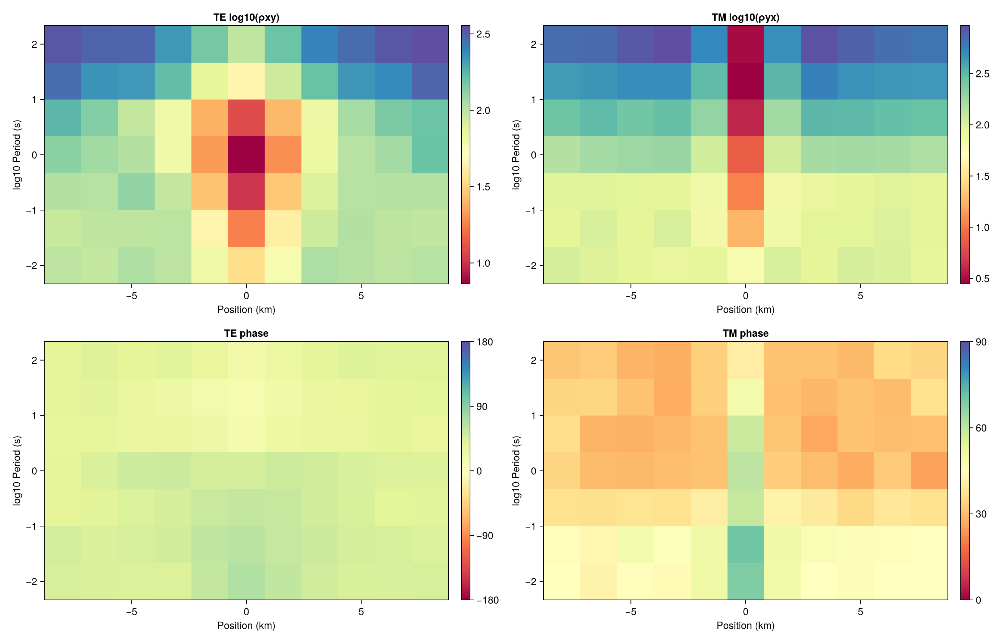
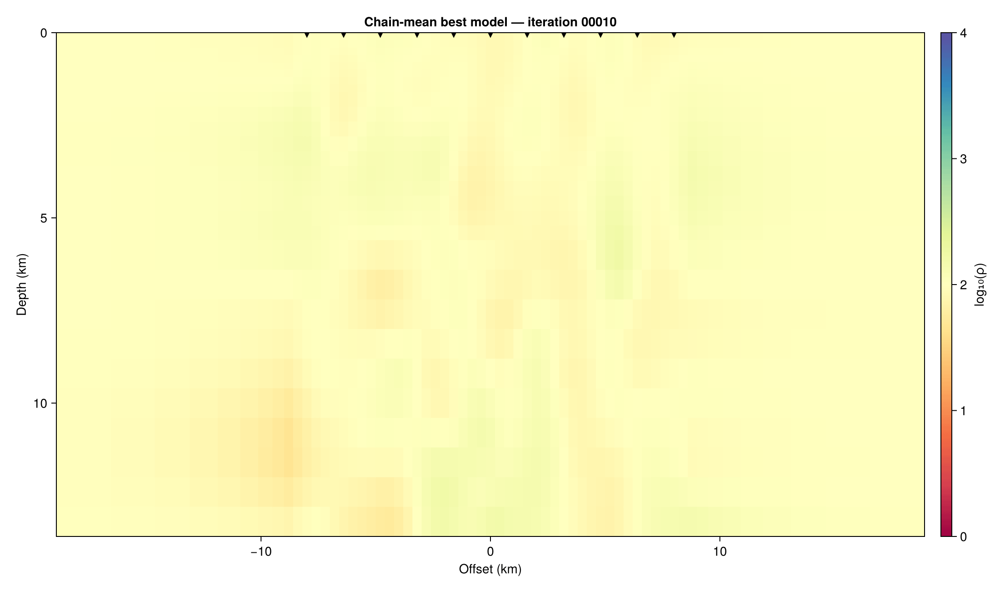

2D VFSA Inversion
Run a 2D magnetotelluric inversion using Very Fast Simulated Annealing (VFSA) with multi-chain ensemble sampling and RBF control parameterization.




Running the example
julia --project=. Examples/run_vfsa2dmt.jlThis runs a two-chain VFSA inversion on the COMEMI-I benchmark and writes results into a timestamped directory under Examples/.
From Julia
using MTGeophysics
result = VFSA2DMT(
VFSA2DMTParams(
script_path = @__FILE__,
start_model_path = "Examples/0COMEMI2D-I/Comemi2D1.ini",
data_path = "Examples/0COMEMI2D-I/Comemi2D1.obs",
config = VFSA2DMTConfig(
n_chains = 2,
n_ctrl = 400,
max_iter = 3000,
n_trials = 4,
log_bounds = (0.0, 4.0),
seed = 20260308,
keep_models = true,
),
),
)CLI entry point
julia --project=. -e 'using MTGeophysics; MTGeophysics.main_vfsa2dmt()' -- \
Examples/0COMEMI2D-I/Comemi2D1.ini \
Examples/0COMEMI2D-I/Comemi2D1.obs \
--n-chains 3 --n-ctrl 400 --max-iter 300 --log-bounds 0,4 --seed 20260308Configuration
| Parameter | Default | Description |
|---|---|---|
n_chains | 2 | Independent Markov chains |
n_ctrl | 400 | RBF control points |
max_iter | 3000 | Iterations per chain |
n_trials | 4 | Trial perturbations per iteration |
log_bounds | (0, 5) | log₁₀(Ω·m) search bounds |
keep_models | false | Save model snapshots for GIF |
Output
The result directory contains:
run_VFSA2DMT_<timestamp>/
├── run_summary.txt
├── chain_N/
│ ├── log.csv
│ ├── best_model.rho
│ └── snapshots/
├── ensemble_mean.rho
├── ensemble_median.rho
├── ensemble_std.rho
└── plots/Ensemble analysis
summary = AnalyseEnsemble2D(result.chain_results;
true_model_path = "Examples/0COMEMI2D-I/Comemi2D1.true",
)Post-processing
Recompute ensemble statistics:
julia --project=. Helpers/run_statistics_2d.jl Examples/run_VFSA2DMT_<timestamp>Generate a convergence GIF (requires keep_models = true):
julia --project=. Helpers/make_gif_2d.jl Examples/run_VFSA2DMT_<timestamp>